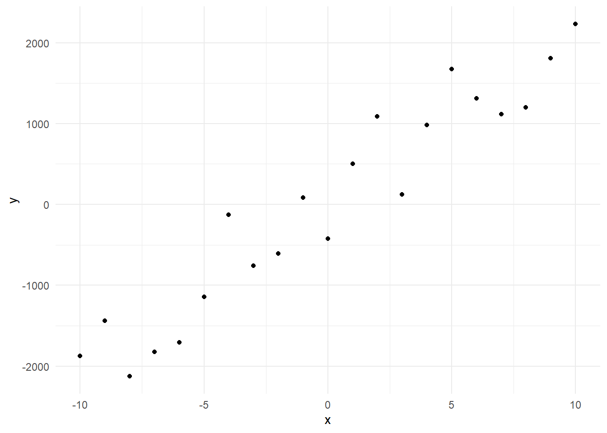
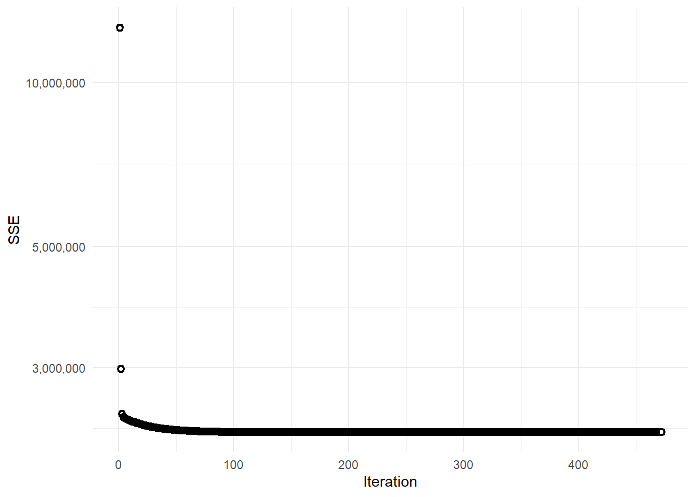

In machine learning a cost function is defined to measure the cumulative error that a predictive function makes relative to actual observations.
Gradient descent is a learning algorithm that attempts to minimize this cost function.
# Load libraries
library(dplyr)
library(ggplot2)
library(scales)
theme_set(theme_minimal())
# Create fictitious data
data <- tibble(x = c(-10:10), y = 199*x - 129 + rnorm(x, mean = x, sd = 500))
# Plot the data
data %>%
ggplot(aes(x, y)) +
geom_point()
The data was defined as a linear function a + bx, where a = -129 and b = 199. Random noise was added so in order to make it more realistic.
We must define the learning rate hyperparameter which determines the rate of convergence of the cost function towards its minimum, assuming there is one. With linear models, the cost function is often defined as the squared sum of errors, a quadratic function:
\(sse = \sum^n_i \frac{1} {2} \times (y^{(i)} - h(x^{(i)}))^2\)
where
\(y^{(i)}\) is ith observed value
and
\(h(x^{(i)})\) is the ith predicted value
# learning_rate
alpha <- 0.001
# Parameters
theta_as <- NULL
theta_bs <- NULL
theta_a <- 0.5
theta_b <- 0.5
dsse_da <- 0
dsse_db <- 0
sse <- NULL
x <- data$x
y <- data$y
for(i in 1:1000) {
theta_a <- theta_a - alpha*dsse_da
theta_b <- theta_b - alpha*dsse_db
yhat <- theta_a + theta_b*x
sse_i <- sum(1/2*(y - yhat)^2)
# The cost function J(x) = sse = 1/2*(y - yhat)^2
# sse = sum(1/2(y - (a + bx))^2)
# dsse_da = (y - (a + bx))*(-1)
# dsse_db = (y - (a + bx))*(-x)
dsse_da <- sum((y - yhat)*(-1))
dsse_db <- sum((y - yhat)*(-x))
sse <- c(sse, sse_i)
theta_as <- c(theta_as, theta_a)
theta_bs <- c(theta_bs, theta_b)
last_two_theta_as <- tail(theta_as, 2)
if(length(theta_as) > 1 && abs(diff(last_two_theta_as)/last_two_theta_as[1]) < 0.000001) break
}
tail(sse)## [1] 3182218 3182218 3182218 3182218 3182218 3182218tibble(iter = seq_along(sse), sse) %>%
ggplot(aes(iter, sse)) +
geom_point(shape = 21, stroke = 1.3, fill = "white") +
labs(y = "SSE", x = "Iteration") +
scale_y_log10(labels = comma)
which.min(sse)## [1] 472tail(theta_as)## [1] -71.09304 -71.09312 -71.09319 -71.09327 -71.09334 -71.09341tail(theta_bs)## [1] 170.5018 170.5018 170.5018 170.5018 170.5018 170.5018